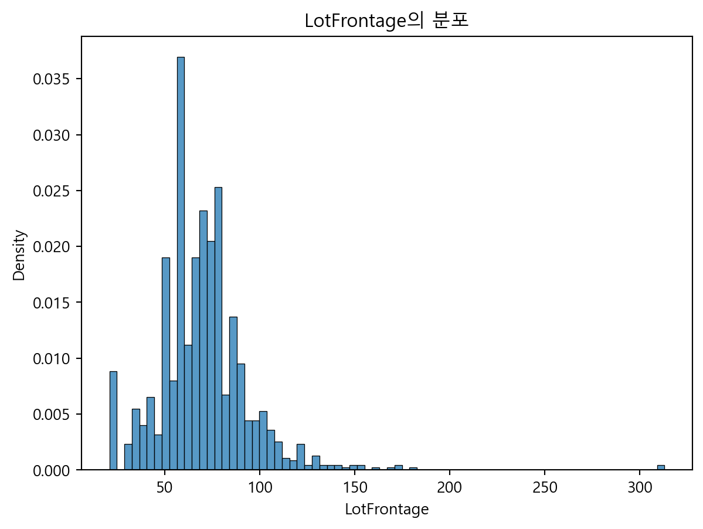
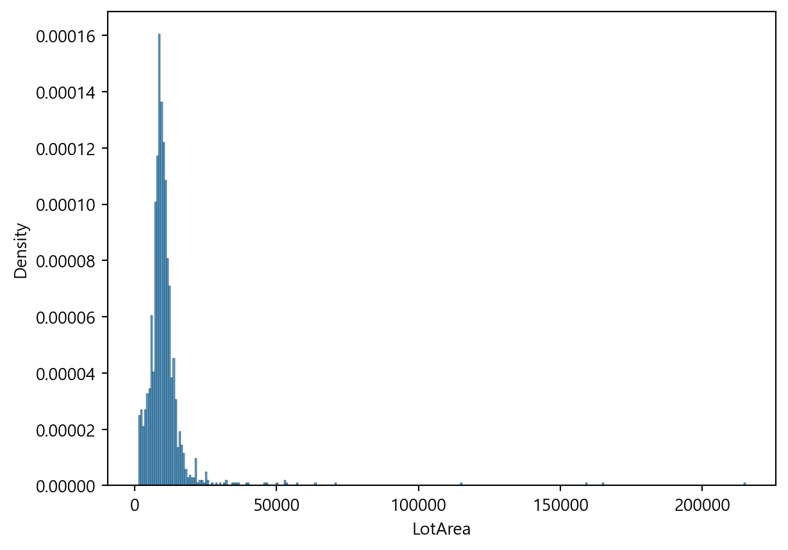
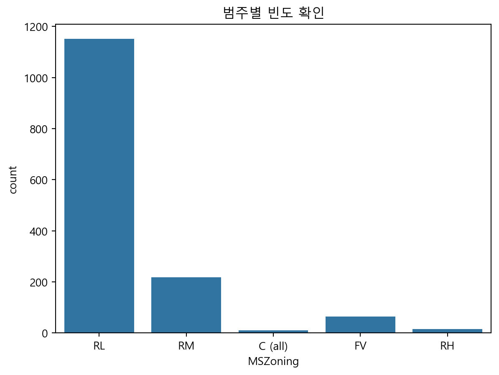
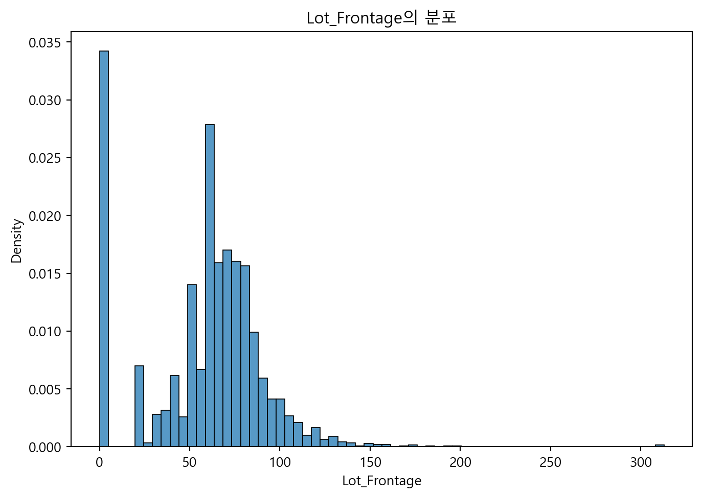

import pandas as pd
import numpy as np
from sklearn.linear_model import LinearRegression
import matplotlib.pyplot as plt
import seaborn as sns
# 데이터 불러오기
train_df = pd.read_csv('../../../lsbigdata-project1/house price/train.csv')
test_df = pd.read_csv('../../../lsbigdata-project1/house price/test.csv')
submission = pd.read_csv('../../../lsbigdata-project1/house price/sample_submission.csv')데이터 불러오기
0. 모든 변수 결측치 확인
pd.set_option('display.max_rows',None)
nan_df = train_df.isna().sum()
nan_df[nan_df>0]
pd.reset_option('display.max_rows')train_df.info()<class 'pandas.core.frame.DataFrame'>
RangeIndex: 1460 entries, 0 to 1459
Data columns (total 81 columns):
# Column Non-Null Count Dtype
--- ------ -------------- -----
0 Id 1460 non-null int64
1 MSSubClass 1460 non-null int64
2 MSZoning 1460 non-null object
3 LotFrontage 1201 non-null float64
4 LotArea 1460 non-null int64
5 Street 1460 non-null object
6 Alley 91 non-null object
7 LotShape 1460 non-null object
8 LandContour 1460 non-null object
9 Utilities 1460 non-null object
10 LotConfig 1460 non-null object
11 LandSlope 1460 non-null object
12 Neighborhood 1460 non-null object
13 Condition1 1460 non-null object
14 Condition2 1460 non-null object
15 BldgType 1460 non-null object
16 HouseStyle 1460 non-null object
17 OverallQual 1460 non-null int64
18 OverallCond 1460 non-null int64
19 YearBuilt 1460 non-null int64
20 YearRemodAdd 1460 non-null int64
21 RoofStyle 1460 non-null object
22 RoofMatl 1460 non-null object
23 Exterior1st 1460 non-null object
24 Exterior2nd 1460 non-null object
25 MasVnrType 588 non-null object
26 MasVnrArea 1452 non-null float64
27 ExterQual 1460 non-null object
28 ExterCond 1460 non-null object
29 Foundation 1460 non-null object
30 BsmtQual 1423 non-null object
31 BsmtCond 1423 non-null object
32 BsmtExposure 1422 non-null object
33 BsmtFinType1 1423 non-null object
34 BsmtFinSF1 1460 non-null int64
35 BsmtFinType2 1422 non-null object
36 BsmtFinSF2 1460 non-null int64
37 BsmtUnfSF 1460 non-null int64
38 TotalBsmtSF 1460 non-null int64
39 Heating 1460 non-null object
40 HeatingQC 1460 non-null object
41 CentralAir 1460 non-null object
42 Electrical 1459 non-null object
43 1stFlrSF 1460 non-null int64
44 2ndFlrSF 1460 non-null int64
45 LowQualFinSF 1460 non-null int64
46 GrLivArea 1460 non-null int64
47 BsmtFullBath 1460 non-null int64
48 BsmtHalfBath 1460 non-null int64
49 FullBath 1460 non-null int64
50 HalfBath 1460 non-null int64
51 BedroomAbvGr 1460 non-null int64
52 KitchenAbvGr 1460 non-null int64
53 KitchenQual 1460 non-null object
54 TotRmsAbvGrd 1460 non-null int64
55 Functional 1460 non-null object
56 Fireplaces 1460 non-null int64
57 FireplaceQu 770 non-null object
58 GarageType 1379 non-null object
59 GarageYrBlt 1379 non-null float64
60 GarageFinish 1379 non-null object
61 GarageCars 1460 non-null int64
62 GarageArea 1460 non-null int64
63 GarageQual 1379 non-null object
64 GarageCond 1379 non-null object
65 PavedDrive 1460 non-null object
66 WoodDeckSF 1460 non-null int64
67 OpenPorchSF 1460 non-null int64
68 EnclosedPorch 1460 non-null int64
69 3SsnPorch 1460 non-null int64
70 ScreenPorch 1460 non-null int64
71 PoolArea 1460 non-null int64
72 PoolQC 7 non-null object
73 Fence 281 non-null object
74 MiscFeature 54 non-null object
75 MiscVal 1460 non-null int64
76 MoSold 1460 non-null int64
77 YrSold 1460 non-null int64
78 SaleType 1460 non-null object
79 SaleCondition 1460 non-null object
80 SalePrice 1460 non-null int64
dtypes: float64(3), int64(35), object(43)
memory usage: 924.0+ KB‘Id’ : 수치컬럼에서 제외해야 함. ‘MSSubClass’ : 수치컬럼으로 되어있는데, 범주컬럼임. ‘LotFrontage’ : 259개 결측치는 집에 연결된 거리가 없어서 결측치인걸까? 그렇다면 0값으로 처리해주기. ‘Alley’ : 1369개 결측치는 골목길이 없다는 것임.
1. ‘SalePrice’ : 판매 가격
plt.clf()
sns.histplot(train_df['SalePrice'] , stat='density')
plt.tight_layout()
plt.show()
print("최소값 :", train_df['SalePrice'].min())
print("최대값 :", train_df['SalePrice'].max())최소값 : 34900
최대값 : 755000이상치 있어보임. 100,000~200,000 달러가 제일 많아보임.
2. ‘MSSubClass’ : 판매 관련 주택 타입 (1층인지, 2층인지, 언제적 집구조인지, 다세대인지 등등) <- 수치컬럼으로 되어 있지만 범주 컬럼임.
train_df['MSSubClass'].value_counts().sort_index()
train_df['MSSubClass'] = train_df['MSSubClass'].astype('object')
plt.clf()
sns.countplot(data=train_df, x='MSSubClass')
plt.show() 20 1946년부터 그 이후로 지어진 1층 짜리 최신 집 (1938, 1946~2010년에 지어진 집들임.)
30 1945년부터 그 이전으로 지어진 1층 짜리 오래된 집 (1885, 1910~1945, 1948에 지어진 집임.)
40 다락방이 있는 1층짜리 집 <- 데이터 4개밖에 없음 (1926,1930,1949,1979)
45 2층짜리 집이지만, 삐족한 지붕때문에 2층의 절반은 없는 미완성 집
50 2층짜리 집이지만, 삐족한 지붕때문에 2층의 절반은 없는 완성된 집
60 1946년부터 그 이후로 지어진 2층 짜리 최신 집 (1946~2009에 지어진 집임)
70 1945년부터 그 이전으로 지어진 2층 짜리 오래된 집 (1872~1945에 지어진 집임)
75 3층짜리 집이지만, 삐족한 지붕때문에 3층의 절반은 없는 집
80 각 층이 엇갈려있는 집
85 현관 앞에 계단으로 층이 엇갈려있는 집
90 다세대 주택 (한 건물에 집이 나눠져 있고 여러 유닛이 삶)
120 1946년부터 그 이후로 지어진 1층짜리 최신 연립주택 그룹 (집이 모여있음)
150 2층짜리 집이지만, 삐족한 지붕때문에 2층의 절반은 없는 연립주택 그룹 (집이 모여있음)
160 1946년부터 그 이후로 지어진 2층짜리 최신 연립주택 그룹 (집이 모여있음)
180 연립주택 그룹 + 각 층이 엇갈림 + 현관 계단 집
190 한 집을 두 집으로 개조해서 쪼갠 집cols = train_df.columns
train_df[train_df['MSSubClass'] == 20]['YearBuilt'].sort_values() # 'MSSubClass'=20은 1938, 1946~2010에 지어진 집임1332 1938
533 1946
1049 1946
1123 1947
607 1948
...
507 2009
987 2009
644 2009
412 2009
378 2010
Name: YearBuilt, Length: 536, dtype: int64train_df[train_df['MSSubClass'] == 30]['YearBuilt'].sort_values() # 'MSSubClass'=30은 1885, 1910~1945, 1948에 지어진 집임106 1885
1013 1910
638 1910
438 1913
1380 1914
...
1337 1941
393 1941
241 1945
68 1945
836 1948
Name: YearBuilt, Length: 69, dtype: int64train_df[train_df['MSSubClass'] == 60]['YearBuilt'].sort_values() # 'MSSubClass'=60은 1946~2009에 지어진 집임425 1946
868 1948
397 1962
1351 1962
895 1963
...
157 2009
762 2009
572 2009
212 2009
460 2009
Name: YearBuilt, Length: 299, dtype: int64train_df[train_df['MSSubClass'] == 70]['YearBuilt'].sort_values() # 'MSSubClass'=70은 1872~1945에 지어진 집임1349 1872
630 1880
747 1880
1132 1880
991 1882
716 1890
1292 1892
676 1900
841 1904
974 1910
740 1910
1408 1910
596 1910
1234 1911
1235 1914
1096 1914
565 1915
482 1915
3 1915
289 1915
407 1915
456 1916
417 1918
1263 1919
1149 1920
531 1920
30 1920
1397 1920
1382 1920
181 1920
329 1920
365 1920
1360 1921
63 1921
1440 1922
1012 1923
807 1923
671 1925
314 1925
458 1925
840 1925
217 1925
519 1926
508 1928
1244 1929
657 1931
1174 1932
190 1932
608 1934
463 1934
1168 1935
461 1936
1075 1940
939 1940
651 1940
1147 1941
1457 1941
467 1942
1301 1942
114 1945
Name: YearBuilt, dtype: int64train_df[train_df['MSSubClass'] == 40]['YearBuilt'].sort_values() # 4개밖에 없음164 1926
589 1930
873 1949
1270 1979
Name: YearBuilt, dtype: int64train_df[train_df['MSSubClass'] == 120]['YearBuilt'].sort_values() # 1976~2009에 지어진 집임.23 1976
126 1976
1431 1976
357 1976
1421 1977
...
350 2007
1415 2007
1181 2008
1228 2008
819 2009
Name: YearBuilt, Length: 87, dtype: int643. ‘MSZoning’ : 판매 관련 일반 구역 분류 (수상 거주지인지, 밀도가 높은 거주지인지 등)
train_df['MSZoning'].value_counts()
plt.clf()
sns.countplot(data=train_df, x='MSZoning')
plt.show()
A 농업
C 상업
FV 수상 거주지
I 산업
RH 높은 밀도 거주지
RL 낮은 밀도 거주지
RP Residential Low Density Park
RM 중간 밀도 거주지=> 데이터상 RL, RM, RH, FV, C(all) 만 있음.
4. ‘LotFrontage’ : 집과 연결된 거리의 직선 길이 (feet)
plt.clf()
sns.histplot(train_df['LotFrontage'], stat='density')
plt.show()
결측치 259개 있음. <- 집에 연결된 거리가 없어서 결측치인걸 수도 있음. 그렇다면 0값으로 처리해주기. 이상치 있어보임.
‘LotArea’ : 부지 크기 (square feet)
plt.clf()
sns.histplot(train_df['LotArea'], stat='density')
plt.show()이상치 있어보임.
‘Street’ : 집에 접근 도로 유형 (자갈길인지, 포장길인지)
train_df['Street'].value_counts()
plt.clf()
sns.countplot(data=train_df, x='Street')
plt.show()
Grvl 자갈길
Pave 포장길자갈길이 6개밖에 안됨.
‘Alley’ : 집에 접근 골목 유형 (자갈 골목길인지, 포장 골목길인지)
train_df['Alley'].value_counts()
plt.clf()
sns.countplot(data=train_df, x='Alley')
plt.show() Grvl 자갈 골목길
Pave 포장된 골목길
NA 골목길 없음1369 결측치 있음. <- 이게 다 골목길 없다는 것임.
‘LotShape’ : 일반적인 집 모양 (일반적인 모양인지, 일반적이지 않은 모양인지 등)
train_df['LotShape'].value_counts()
plt.clf()
sns.countplot(data=train_df, x='LotShape')
plt.show()
Reg 보통
IR1 약간 보통이 아님
IR2 중간 정도 보통이 아님
IR3 보통이 아님일반적이지 않은 집이 10개 있음. 이상치에 해당하는 집일 수도…?
‘LandContour’ : 집의 평탄 정도
train_df['LandContour'].value_counts()
plt.clf()
sns.countplot(data=train_df, x='LandContour')
plt.show()
Lvl 평평한 것에 가까움
Bnk 기움 - Quick and significant rise from street grade to building
HLS 비탈 - Significant slope from side to side
Low 움푹한 곳평평한 것에 가까운게 많음.